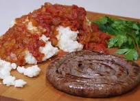

Pap and words recipe

Description
This recipe is to guide you to making lovely wors and wonderful soft pap.
Ingredients
- Wors
- Maize meal
- Water
- Boerie Relish
Steps
- Bring 1 litre of water and 12.5ml of salt to a boil.
- Stir 750ml maize meal.
- Cover and cook on low heat for 20 to 30 minutes.
- Grill or pan-fry wors over medium heat for 5 minutes on each side.
- Saute finely chopped onion in oil and chapped tomatoes, garlic and herbs.
- Simmer for 10-15 minutes.
Home